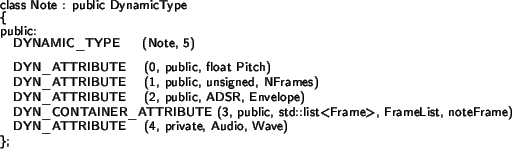
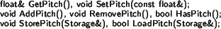
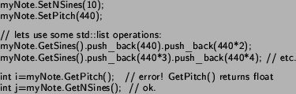

Next: Processing Data Up: Data Infrastructure Previous: Data Infrastructure
Though it might be a quite controversial issue and its name may after this explanation seem not the most appropriate3.2, there are three main reasons for the decision of implementing and using Dynamic Types (DTs for short) in CLAM.
For instantiating and de-instantiating dynamic attributes the developer declaring a Dynamic Type class has to use a set of macros that then, on pre-compile time, expand all of the functionality.
We will describe how Dynamic Type classes work and how they can be
used through an example. Imagine we want to model a musical note with
a DT3.3. We declare the DT class like this:

As it can be seen, three different macros are used in Dynamic Types: DYNAMIC_TYPE for expanding the concrete DT constructors, DYN_ATTRIBUTE for declaring each dynamic attribute and DYN_CONTAINER_ATTRIBUTE for declaring any STL interface compliant container.
1. DYNAMIC_TYPE is a macro that expands the default constructor of the concrete DT being declared. The first parameter is the total number of dynamic attributes, and the second one the class name. If the writer of a DT derived class sees the need of writing a customized default constructor or other constructors it can be done using special purpose initializers. english
2. DYN_ATTRIBUTE is used to declare a dynamic attribute. It has four parameters, the first one is the attribute order (needed for technical reasons of the DT implementation), the second one is the accessibility (public, protected or private) the third one is the type: it can be any C++ valid type including typedef definitions but not references or pointers. englishThe forth and last parameter is the attribute name, it is important to begin in upper-case because this name (let's call it XXX) will be used to form the attribute accessors GetXXX() and SetXXX(), thus the XXX must start in upper-case.
3. DYN_CONTAINER_ATTR: The purpose of this one is to give
storage (only XML by now) support to attributes declared as containers
of objects. For that, we need that container to fulfill the STL container
interface, so all the STL collection of containers is usable. This
macro has five parameters, one more that DYN_ATTRIBUTE:
the attribute numeration, accessibility, the type, the name of the
attribute and finally the new one: the label of each contained element
that will be stored.
Returning to the example above, each DYN_ATTRIBUTE macro
will expand a set of usable methods:

Of course GetPitch and SetPitch are the usual accessors to the data. AddPitch and RemovePitch will instantiate and de-instantiate the attribute, combined with UpdateData that will be explained latter on. HasPitch returns whether Pitch is instantiate at this moment. Finally StorePitch and LoadPitch are for storage purposes.
Once, the concrete DT Note has been declared, we can use it like this:
Or in the case that we want all of them, is better to use AddAll.
This method is not macro generated as AddPitch, but is available
in any concrete DT.
myNote.AddAll();
As this kind of operations requires memory management we want to update
the data, with its possible reallocations only once for every modification
of the DT shape or structure (what can mean lots of individual adds
and removes). We'll use the DynamicType member UpdateData for that
purpose:
And now all the instantiated attributes can be used normally using
the accessors GetXXX and SetXXX. For example:

2004-10-18